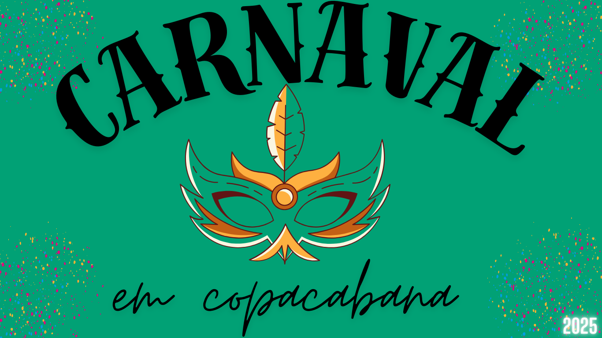

Carnaval e Copacabana
O Carnaval em Copacabana é uma das experiências mais icônicas e animadas do Rio de Janeiro. A famosa praia se transforma em um grande palco de festa durante o carnaval, com blocos de rua, desfiles e, claro, muito samba, alegria e calor. Apesar de Copacabana ser mais conhecida pelas suas praias e pelo famoso calçadão, durante o carnaval a região ganha uma nova vida. Blocos de rua tomam conta das ruas, e muitos foliões se concentram no Posto 6, que é um dos pontos mais tradicionais para o carnaval de rua na praia. O cenário perfeito com o mar ao fundo torna essa festa ainda mais especial, com os foliões se espalhando pelo calçadão e pelas ruas, dançando e curtindo o clima descontraído.
Alguns blocos são famosos, como o Bloco da Preta (da cantora Preta Gil), que costuma arrastar multidões para a praia, e o Bloco do Sargento Pimenta, que mistura samba com rock. Além disso, a festa também é marcada por muitos eventos de música ao vivo e shows, que atraem tanto turistas quanto cariocas. Em Copacabana, você também encontra trios elétricos que circulam pela orla, além de festas em bares e clubes. A praia é um ponto de encontro natural para as pessoas, e muitos aproveitam para se refrescar nas águas do mar ou apenas curtir a festa na areia. Além dos blocos de rua e festas na orla, o carnaval em Copacabana tem um clima de celebração para todos os gostos, com muita gente se fantasiando e curtindo o carnaval de forma mais descontraída e festiva. 